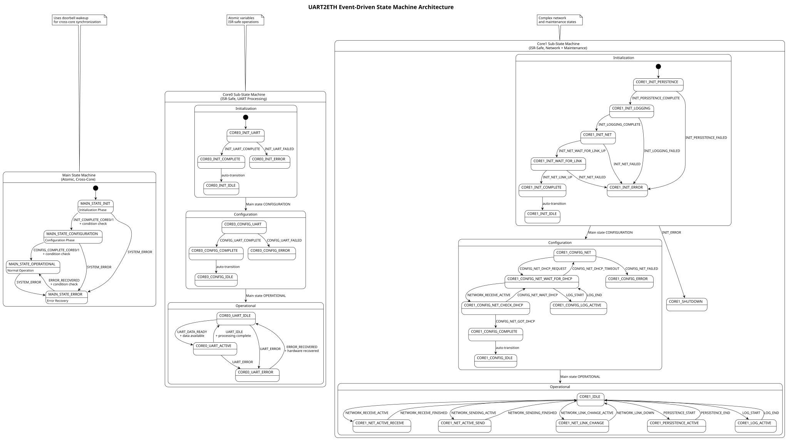

typedef enum {
MAIN_STATE_INIT = 0, // System initialization and hardware setup
MAIN_STATE_CONFIGURATION = 1, // Configuration loading and validation
MAIN_STATE_OPERATIONAL = 2, // Normal operation mode
MAIN_STATE_ERROR = 3 // Error state requiring recovery
} main_state_t;
ADR-007: Event-Driven State Machine Architecture
Status
Decided and Implemented
Date
2024-01-16 (Updated: 2025-08-16)
Context
The UART2ETH system requires coordinated dual-core operation with predictable behavior across system initialization, configuration loading, normal operation, error conditions, and recovery procedures. The system needs sophisticated state coordination between Core0 (UART processing) and Core1 (network, persistence, and maintenance) while maintaining deterministic behavior and avoiding race conditions.
Key requirements: * Dual-core state coordination with atomic main state synchronization using doorbells * Complex initialization sequences with persistence, logging, and network hardware setup * Configuration phase with UART setup and DHCP network configuration * Runtime state management for UART processing and network operations * Event-driven state transitions with condition validation (no direct state manipulation) * ISR-safe operations for core-specific sub-states with atomic variables * Cross-core wakeup using RP2350 multicore doorbells * Comprehensive error handling with recovery and fallback mechanisms
Decision
We implement three independent event-driven state machines with atomic main state and ISR-safe sub-states using the following architecture:
Event-Driven State Machine Architecture
Three Independent State Machines: * Main State Machine: Global system coordination (atomic, cross-core) * Core0 Sub-State Machine: UART-specific operations (ISR-safe, Core0-only) * Core1 Sub-State Machine: Network and maintenance operations (ISR-safe, Core1-only)
Event-Driven Pattern Only:
* No Direct State Setting: State machines only accept events, never direct state manipulation
* Transition Function: current_state + event + check_condition() → new_state
* Validation Required: All transitions must pass condition checks
* Event Processing: Single interface for each state machine
State Definitions
Main States (shared between cores, atomic access):
Core0 Sub-States (UART processing, ISR-safe):
typedef enum {
// Initialization sequence
CORE0_INIT_UART, // Initializing UART hardware
CORE0_INIT_COMPLETE, // UART init complete, signaling main state
CORE0_INIT_IDLE, // Waiting for other core during init
CORE0_INIT_ERROR, // UART initialization failed
// Configuration sequence
CORE0_CONFIG_UART, // Configure UARTS
CORE0_CONFIG_COMPLETE, // Reconfiguration successful
CORE0_CONFIG_IDLE, // Reconfiguration successful, waiting
CORE0_CONFIG_ERROR, // Reconfiguration NOT successful
// Operational states
CORE0_UART_IDLE, // No active UART operations
CORE0_UART_ACTIVE, // Processing UART data
CORE0_UART_ERROR // UART hardware error state
} core0_substate_t;Core1 Sub-States (Network and maintenance, ISR-safe):
typedef enum {
// Initialization sequence
CORE1_INIT_PERISTENCE, // Init persistence
CORE1_INIT_LOGGING, // Init logging
CORE1_INIT_NET, // Init net
CORE1_INIT_WAIT_FOR_LINK, // Init is not complete without link
CORE1_INIT_COMPLETE, // Init complete
CORE1_INIT_IDLE, // Init complete, sleep until other core finishes init
// Configuration sequence with DHCP
CORE1_CONFIG_NET, // (re)-configure net
CORE1_CONFIG_COMPLETE, // (re)-configuration of net successfull
CORE1_CONFIG_NET_WAIT_FOR_DHCP, // (re)-configuration of net successfull, get dhcp
CORE1_CONFIG_NET_CHECK_DHCP, // (re)-configuration of net successfull, check if we got dhcp
CORE1_CONFIG_IDLE, // (re)-configuration of net successfull
CORE1_CONFIG_LOG_ACTIVE, // There are logs queued during config
CORE1_CONFIG_ERROR, // (re)-configuration of net NOT successfull
// Operational states
CORE1_NET_LINK_CHANGE, // Network interface changing
CORE1_NET_CONNECTED, // Network interface up
CORE1_NET_DISCONNECTED, // Network interface down
CORE1_NET_IDLE, // Network interface up, no connections
CORE1_NET_ACTIVE_RECEIVE, // Active network connections receiving
CORE1_NET_ACTIVE_SEND, // Active network connections sending
CORE1_PERSISTENCE_ACTIVE, // Flash persistence operation active
CORE1_LOG_ACTIVE, // Log processing active
CORE1_IDLE, // Idle, may sleep here or schedule new work
// Error states
CORE1_INIT_ERROR, // Unrecoverable init error
CORE1_SHUTDOWN // Stop main loop
} core1_substate_t;Event-Driven Interface Design
Core State Machine Interface:
// Event processing functions (the ONLY way to change states)
bool state_machine_process_main_event(main_state_event_t event);
bool state_machine_process_core0_event(core0_event_t event);
bool state_machine_process_core1_event(core1_event_t event);
// State queries (read-only, non-blocking)
main_state_t state_machine_get_main_state(void);
core0_substate_t state_machine_get_core0_substate(void);
core1_substate_t state_machine_get_core1_substate(void);Main State Events:
typedef enum {
MAIN_EVENT_INIT_COMPLETE_CORE0, // UART initialized
MAIN_EVENT_INIT_COMPLETE_CORE1, // Network interface initialized
MAIN_EVENT_CONFIG_COMPLETE_CORE0, // Configuration loaded and validated
MAIN_EVENT_CONFIG_COMPLETE_CORE1, // Configuration loaded and validated
MAIN_EVENT_SYSTEM_ERROR, // System error detected
MAIN_EVENT_ERROR_RECOVERED // Recovery from error state complete
} main_state_event_t;Core0 Events:
typedef enum {
CORE0_EVENT_INIT_UART_COMPLETE, // UART initialized
CORE0_EVENT_INIT_UART_FAILED, // UART could not be initialized
CORE0_EVENT_CONFIG_UART_COMPLETE, // UART reconfigured successfully
CORE0_EVENT_CONFIG_UART_FAILED, // UART reconfiguration failed
CORE0_EVENT_UART_DATA_READY, // UART data available for processing
CORE0_EVENT_UART_IDLE, // UART processing completed
CORE0_EVENT_UART_ERROR, // UART hardware error detected
CORE0_EVENT_ERROR_RECOVERED, // UART error recovery complete
CORE0_EVENT_AUTO_TRANSITION // Dummy event for auto-state transition
} core0_event_t;Core1 Events (extensive network and maintenance events):
typedef enum {
// Initialization events
CORE1_EVENT_INIT_PERSISTENCE_COMPLETE,
CORE1_EVENT_INIT_PERSISTENCE_FAILED,
CORE1_EVENT_INIT_LOGGING_COMPLETE,
CORE1_EVENT_INIT_LOGGING_FAILED,
CORE1_EVENT_INIT_NET_WAIT_FOR_LINK_UP,
CORE1_EVENT_INIT_NET_LINK_UP,
CORE1_EVENT_INIT_NET_LINK_DOWN,
CORE1_EVENT_INIT_NET_COMPLETE,
CORE1_EVENT_INIT_NET_FAILED,
// Configuration events with DHCP handling
CORE1_EVENT_CONFIG_NET_DHCP_REQUEST,
CORE1_EVENT_CONFIG_NET_GOT_DHCP,
CORE1_EVENT_CONFIG_NET_WAIT_DHCP,
CORE1_EVENT_CONFIG_NET_DHCP_TIMEOUT,
CORE1_EVENT_CONFIG_NET_COMPLETE,
CORE1_EVENT_CONFIG_NET_FAILED,
// Network operational events
CORE1_EVENT_NETWORK_LINK_CHANGE_ACTIVE,
CORE1_EVENT_NETWORK_LINK_UP,
CORE1_EVENT_NETWORK_LINK_DOWN,
CORE1_EVENT_NETWORK_RECEIVE_ACTIVE,
CORE1_EVENT_NETWORK_RECEIVE_FINISHED,
CORE1_EVENT_NETWORK_SENDING_ACTIVE,
CORE1_EVENT_NETWORK_SENDING_FINISHED,
CORE1_EVENT_NETWORK_UP,
CORE1_EVENT_NETWORK_DOWN,
CORE1_EVENT_CONNECTION_ACTIVE,
CORE1_EVENT_CONNECTION_IDLE,
// Maintenance events
CORE1_EVENT_PERSISTENCE_START,
CORE1_EVENT_PERSISTENCE_END,
CORE1_EVENT_LOG_START,
CORE1_EVENT_LOG_END,
CORE1_EVENT_AUTO_TRANSITION
} core1_event_t;Concurrency and Safety Model
Main State Machine:
* Atomic Operations: Uses _Atomic variables for state transitions
* Cross-Core Access: Both cores can send events, both can read state
* Doorbell Synchronization: RP2350 multicore doorbells wake other core on main state changes
* Memory Barriers: Proper barriers ensure cache coherency
Sub-State Machines:
* ISR-Safe: Compatible with interrupt service routines using _Atomic variables
* Single-Core Ownership: Core0 owns Core0 sub-state, Core1 owns Core1 sub-state
* No Cross-Core Locking: No mutexes required for sub-states
* Atomic Variables: Use _Atomic variables for ISR safety
Doorbell Implementation:
extern int doorbell_core0_wakes_core1;
extern int doorbell_core1_wakes_core0;
static void wake_other_core_after_main_state_change(main_state_t new_state) {
// Wake the other core
multicore_doorbell_set_other_core(doorbell_core0_wakes_core1);
multicore_doorbell_set_other_core(doorbell_core1_wakes_core0);
}Core Main Loop Architecture
Dual-Core Launch: main.c launches both cores with dedicated entry points
Core-Specific Modules: core0_main.c and core1_main.c with dedicated main functions
State-Driven Logic: Core main loops query states and send events to control behavior
Non-Blocking Queries: State access never blocks core operations
Complex State Transition Examples
Initialization Sequence:
1. Main state starts in MAIN_STATE_INIT
2. Core0: CORE0_INIT_UART → CORE0_INIT_COMPLETE → CORE0_INIT_IDLE
3. Core1: CORE1_INIT_PERISTENCE → CORE1_INIT_LOGGING → CORE1_INIT_NET → CORE1_INIT_WAIT_FOR_LINK → CORE1_INIT_COMPLETE → CORE1_INIT_IDLE
4. When both cores reach IDLE, main state transitions to MAIN_STATE_CONFIGURATION
Configuration Sequence:
1. Main state: MAIN_STATE_CONFIGURATION
2. Core0: CORE0_CONFIG_UART → CORE0_CONFIG_COMPLETE → CORE0_CONFIG_IDLE
3. Core1: CORE1_CONFIG_NET → CORE1_CONFIG_NET_WAIT_FOR_DHCP → CORE1_CONFIG_NET_CHECK_DHCP → CORE1_CONFIG_COMPLETE → CORE1_CONFIG_IDLE
4. When both cores reach IDLE, main state transitions to MAIN_STATE_OPERATIONAL
DHCP Configuration Handling:
// Complex DHCP state handling in Core1
case CORE1_CONFIG_NET_WAIT_FOR_DHCP:
switch (event) {
case CORE1_EVENT_NETWORK_RECEIVE_ACTIVE:
new_state = CORE1_CONFIG_NET_CHECK_DHCP;
break;
case CORE1_EVENT_CONFIG_NET_DHCP_TIMEOUT:
new_state = CORE1_CONFIG_NET; // Retry
break;
case CORE1_EVENT_LOG_START:
new_state = CORE1_CONFIG_LOG_ACTIVE; // Handle logs during DHCP
break;
}
break;Condition Checking Functions
Cross-Core Coordination Conditions:
// Checks if Core0 can trigger main state transition from INIT to CONFIGURATION
static bool check_core0_initialization_complete(void) {
return atomic_load(&g_initialized) &&
atomic_load(&g_main_state) == MAIN_STATE_INIT &&
(atomic_load(&g_core1_substate) == CORE1_INIT_IDLE) &&
(atomic_load(&g_core0_substate) == CORE0_INIT_COMPLETE ||
atomic_load(&g_core0_substate) == CORE0_INIT_IDLE);
}
// Checks if Core1 can trigger main state transition from CONFIGURATION to OPERATIONAL
static bool check_core1_configuration_complete(void) {
return atomic_load(&g_initialized) &&
atomic_load(&g_main_state) == MAIN_STATE_CONFIGURATION &&
(atomic_load(&g_core1_substate) == CORE1_CONFIG_COMPLETE ||
atomic_load(&g_core1_substate) == CORE1_CONFIG_IDLE) &&
(atomic_load(&g_core0_substate) == CORE0_CONFIG_IDLE);
}Rationale
Advantages
-
Deterministic Behavior: Complex state sequences ensure predictable system behavior
-
Robust Initialization: Multi-stage initialization prevents race conditions
-
DHCP Integration: Sophisticated network configuration with timeout handling
-
Cross-Core Coordination: Atomic main state with doorbell wakeup ensures synchronization
-
ISR Compatibility: Sub-state machines safe for interrupt context
-
Error Recovery: Comprehensive error handling at each stage
-
Testability: Event processing and condition functions can be unit tested independently
-
Maintainability: Clear event definitions make system behavior easier to understand
-
Performance: Non-blocking state queries and lock-free sub-states
Implementation Strategy
Memory Layout:
// State variables with proper synchronization
static _Atomic main_state_t g_main_state = MAIN_STATE_INIT;
static _Atomic core0_substate_t g_core0_substate = CORE0_INIT_UART;
static _Atomic core1_substate_t g_core1_substate = CORE1_INIT_PERISTENCE;
// Initialization flag
_Atomic bool g_initialized = false;Event Processing Pattern:
bool state_machine_process_main_event(main_state_event_t event) {
main_state_t current_state = atomic_load(&g_main_state);
main_state_t new_state = current_state; // Default: no change
// State + Event + Condition → New State
switch (current_state) {
case MAIN_STATE_INIT:
switch (event) {
case MAIN_EVENT_INIT_COMPLETE_CORE0:
if (check_core0_initialization_complete()) {
new_state = MAIN_STATE_CONFIGURATION;
// Also update substates for next phase
atomic_store(&g_core0_substate, CORE0_CONFIG_UART);
atomic_store(&g_core1_substate, CORE1_CONFIG_NET);
}
break;
}
break;
}
// Apply state change if needed
if (new_state != current_state) {
atomic_store(&g_main_state, new_state);
wake_other_core_after_main_state_change(new_state);
}
return true;
}Consequences
Positive
-
Impossible Invalid States: Event-driven pattern prevents invalid state transitions
-
Complex Coordination: Handles sophisticated dual-core initialization and configuration
-
DHCP Integration: Robust network configuration with proper timeout handling
-
Cross-Core Synchronization: Doorbell-based wakeup ensures efficient coordination
-
ISR-Safe Operations: Sub-state machines work correctly in interrupt context
-
Comprehensive Error Handling: Error states and recovery at each stage
-
Maintainability: Clear state diagrams show system behavior
-
Testability: Each state transition can be unit tested independently
Negative
-
Implementation Complexity: Large number of states and transitions
-
Memory Overhead: Event processing and condition functions for all transitions
-
Development Time: Must design proper events and conditions for each transition
-
Learning Curve: Developers must understand complex state machine interactions
Implementation Requirements
-
Event-driven state machine module with atomic operations and ISR-safe sub-states
-
Core0 main function with UART processing and complex initialization sequence
-
Core1 main function with network, persistence, DHCP handling, and log processing
-
Doorbell-based cross-core synchronization for main state changes
-
Comprehensive condition checking functions for state transition validation
-
Integration with existing shared memory, logging, and persistence systems
Updated State Machine Diagrams

This updated ADR-007 now accurately reflects the actual implemented state machine architecture with its complex initialization sequences, DHCP handling, and sophisticated cross-core coordination.
Feedback
Was this page helpful?
Glad to hear it! Please tell us how we can improve.
Sorry to hear that. Please tell us how we can improve.